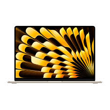
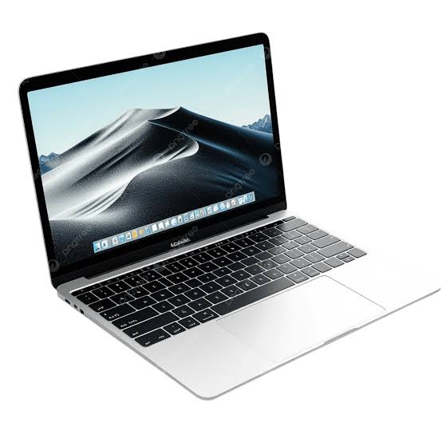
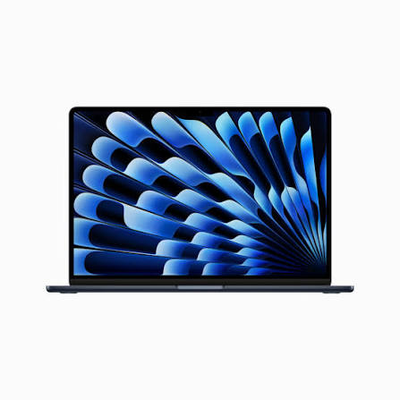

| Producto | Imagen | Descripción | Precio |
|---|---|---|---|
| MacBook Air |
 |
La MacBook Air es una computadora portátil ligera y delgada. Es adecuada para estudiar, trabajar, navegar por Internet y realizar diferentes actividades. | $999 |
| MacBook Pro |
 |
La MacBook Pro está diseñada para ofrecer un mayor rendimiento. Es utilizada para programación, edición de video, diseño y otras tareas exigentes. | $1599 |
| MacBook Air 15" |
 |
Una computadora portátil con pantalla grande, diseño delgado y batería de larga duración. | $1199 |